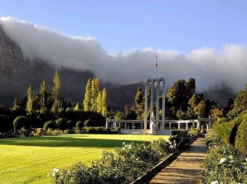

Cape Town 3 Day Discover Tour

Cape Town 3 Day Discover
- Our three day Discovery tour will include the following:
- Cable car to the top of the world famous natural wonder Table Mountain
- The iconic beaches of Clifton and Campsbay with their cocktail bars and restaurants
- The world famous Chapmans Peak mountain drive to beautiful Noordhoek to follow the coast to Cape Point
- Trip to the wine farms of the Paarl, Stellenbosch and Franschhoek valleys
- A day trip up the west coast to the small fishing villages dotted along the coast such as Yzerfontein, Langebaan and Paternoster